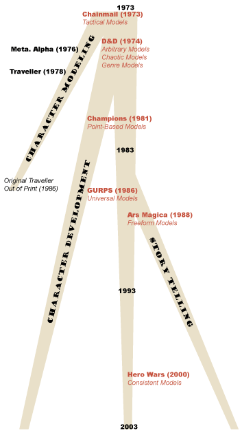

Trials, Triumphs & Trivialities #131: Trials, Triumphs & Trivialities #131:
A Brief History of Roleplaying, Part OneAugust 28, 2003 - No genre stands on its own. There are always brethren and parents which influenced the birth of a genre and its continued evolution. From the MMORPG industry we can look back and see many predecessors: the single-player Adventure games, from the Colossal Cave to Infocom; the old rogue-like games, such as Angband and Nethack; and the many early multiplayer games, including Netrek and the first-generation MUDs.However, underlying almost all of those genres is still another, a genre that continues to change and evolve to this day: the tabletop roleplaying game. For the next three columns I'd like to trace its history and evolution, to see what the tabletop genre has learned, in the hope that we might be able to learn those same lessons ourselves. An Overview of RP EvolutionTabletop Roleplaying, as we now know it, originated in 1973, when Gary Gygax's Fantasy Supplement for his Chainmail miniatures game was merged with Dave Arneson's fantasy game. For the first time individual characters were important in a war game, and it was all placed in a fantasy milieu reminiscent of J.R.R. Tolkien's Middle-Earth or Robert E. Howard's Hyborea. From that time to the present the ideas underlying tabletop roleplaying have slowly changed and branched out — evolving. Many of these changes fall into the category that I call core game design. These were purely mechanistic changes which modified the ways that designers built modeling systems and game mechanics. This trunk of RPG evolution is the first thing I'll be covering this week. In these earliest roleplaying games, starting with the Gygax+Arneson Chainmail (1973), the goal of the game designs was primarily character modeling. The purpose was to create statistics, abilities, and rules which could be used to depict a character such as Conan or Frodo within a game. This core methodology forms the first branch in the evolution of the roleplaying tree. It was a short-lived branch, and one I'll also be covering this week. Very shortly thereafter a second branch appeared in the roleplaying evolutionary tree, which I call character development. The earliest example of this new trend was the original Dungeons & Dragons (1974). Instead of having static characters, players were offered ways for their characters to evolve and change. This new style of play was such a clear improvement over the old one that it quickly overwhelmed the original. Despite the more recent appearance of new types of roleplaying games, character development games continue strong to this day, and are definitely the most important branch in the roleplaying evolutionary tree. I'll cover them in more depth in the next article in this series, in two weeks. Starting as early as 1984, a third branch appeared in the roleplaying tree: the story telling game. The emphasis of these games changed from being about character development to being about story development. To various degrees player investment in individual characters was dramatically reduced in exchange for telling better stories. A triad of games influenced this branch of design in the late 1980s: Paranoia (1984), Pendragon (1985), and Ars Magica (1988). It wasn't until the 1990s that the branch really started bearing fruit, when Jonathan Tweet and Robins Laws game designs started proliferating. I'll cover this branch in more detail two articles down the road, in four weeks (at which time I'll also return to the question of how this can affect online game design).  For now, let's take a look at that sturdy trunk — the core of roleplay design. The RP Trunk: Core Game DesignThe central question of the RP trunk is this: how does a game choose to model the world? As roleplaying games have evolved, that question has been answered in many different ways. Sometimes we've learned better answers to this question, and sometimes simply different ones. When talking about core game design here, we'll only cover abstract or overarching modeling issues; the specific questions of modeling characters will be delayed until the discussions of the "character development" branch. Along the way we'll see two different trends: first, a movement to break away from certain arbitrary decisions implicit in the wargaming genre that roleplaying games grew from; and second, a movement from chaos in game modeling to consistency. Tactical Models (1973). Tabletop roleplaying games grew directly out of miniature and wargames from the 1960. Thus, it's not surprising that the earliest games had very rigid ways to model combat. These tactical conflict modeling games began with Arneson's variant of Chainmail (1973), where combat was based on miniatures. Other early releases such as DragonQuest (1980) used hex maps as well. It's a bit hard to talk about the evolution of tactical conflict modeling versus its opposite abstract conflict modeling, because the two styles are primarily a matter of personal taste, and flow back and forth within the evolutionary stream of RPGs. Some recent games such as Dungeons & Dragons 3E (2000) still push tactical modeling hard, while over in the storytelling branch, games such as The Dying Earth (2001) almost totally eschew it. Chaotic Models (1974). Moving into the first true roleplaying game, Dungeons & Dragons (1974), we find game systems that were all over the place. I'll kindly call this methodology a chaotic modeling. This means that various & inconsistent game systems were used by the game to model different parts of the world. Just looking at character modeling in various early versions of D&D and AD&D, you had one system to model Strength (a range of 3-17, then 18/01 to 18/00), one to model all the other characteristics (3-18), one to model armor class (10 to -10), one to model thief ability (0-100%), one to model skill in combat (a to-hit number from 20 to 1), one to model clerical spells (7 levels of magic), one to model magic-user spells (9 levels of magic), etc. The fact that the game couldn't even keep its core range straight (was it yards or feet?) says a lot. Genre & Arbitrary Models (1974). Because D&D was the first RPG, others tended to follow its lead. This means that certain modeling decisions made in D&D quickly became the norm. Two other trends that D&D began, and which took years to change, were: genre-specific modeling, meaning that game systems were built to work only with a very particular background; and arbitrary modeling, meaning that game systems offered very specific rules for actions, with no room for on-the-fly, freeform gaming. Point-Based Models (1981). Returning to the topic of chaotic modeling, we can find the first clear growth out of that trend with the introduction of point-based modeling. The concept here was that even if different numerical ranges were used to describe different subsystems, they could all still be linked up via certain standard point values. Some early superhero games went this direction, including Superhero: 2044 (1977) and Supergame (1980), but they faded away quickly enough that they didn't leave a lasting impact on the industry. Another early instance of this type of design was Traveller, Book 5: High Guard (1980), which included a ship construction system which measured ship values by "tonnage", and then limited construction based on the weight of ship components. However, the game that really brought this trend to the masses was Champions (1981) which modeled characters with points, as many other games have since. Another early example of non-character based point-modelling was Battledroids (1984), which later became Battletech, wherein tonnage points could this time be used to build giant robots. (Technically Battle* wasn't a roleplaying game until the release of Mech Warrior (1986).) Universal Models (1986). To fully expand out of the early, chaotic RPG models, games needed to step even beyond the point-equivalence models. The next major movement in this direction was the universal model, wherein game systems started being adaptable to lots of different settings, rather than being genre specific. Technically, this idea is almost as old as roleplaying. It first gained some prominence with Chaosium's Basic Roleplaying system which was used in RuneQuest (1978), Call of Cthulhu (1981), and Stormbringer (1981) — three very different games. However, Chaosium games did vary as appropriate for setting, as did early Hero system games, including Champions (1981), Justice Inc. (1984), and Fantasy Hero (1985). The first game to really make the claim that the same system could be used universally without changes was GURPS (1986). Although the overall idea of some system independence seems a good concept, and a step away from chaos, totally straightjacketing a system into parallel lines of development as GURPS does will probably never be the universal way to develop games. Nonetheless, modern universal successes like d20 (2000) and TriStatDx (2003) speak for themselves. Freeform Models (1988). Traditionally, since their advent in 1973, RPGs had offered up the idea that the rules were the ultimate authority in a game and couldn't be spontaneously added to on the spot. Ars Magica (1988) was one of the first games to change this, with a largely freeform magic system, wherein players could invent new spells — both on-the-fly and in the labs — totally beyond what was in the books. Though freeform models are perfectly usable in any branch of RPGs, they're the most used in the Storytelling branch, and so I'm going to cover the next evolutionary step, Play-Driven Plots (1989) there. Consistent Models (2000). I think you can look at much of the evolution of RPGs as a move toward consistency, crawling out of the chaotic models first espoused by early games like D&D. Vampire: The Masquerade (1991) was a strong step in this direction, as one of the earlier games to break down the artificial distinction between attribute and skill rankings. The first game that I'm really aware of that took it to the obvious, ultimate step was Hero Wars (2000), by Robin Laws, which uses the exact same scale for skills, relationships, personality traits, magic, combat, and even items. The Dying Earth RPG (2001), also by Robin Laws, follows the same trend. When looking back at the trends in the core game design of RPGs, I don't think you can say that any game along the chaos-consistency spectrum is "best". Each individual designer finds their own sweet spot, balancing consistency versus accuracy of depiction. However, in the other movement, away from RPG's tactical beginnings, I believe you can find many strong ideas that demonstrably improve the genre, and we'll see more of that in the weeks to come. Branch One: Character Modeling GamesWith the idea of RPGs still new and innovative, the first branch of the RPG tree was a style of game that lasted only a couple of years as a serious design meme, and which was eventually totally overcome by character development games. These early character modeling games placed as their goal the accurate portrayal of some character in a game environment. There was no opportunity for growth or change, simply a static existence. There's very little to say about this branch, because it so quickly dead-ended. The original Arneson-variant of Chainmail (1973) fit into this category, as did some of the earlier RPGs, including Metamorphosis Alpha (1976) and Traveller (1977). The latter was the only one that really ran with the idea, and by the time its second edition came out, as Megatraveller (1987), the branch was utterly dead. Meanwhile, most RPGs would instead follow the character development branch, which began with D&D (1974). ConclusionFor suggestions on gaming trending, thanks to folks on various gaming mailing lists. I know I pulled some specific points from Wayne Shaw and Mr. Lizard for this piece. My reference book for this article was Heroic Works, a sadly out-of-print and long out-of-date overview of the genre published in 1991. To a lesser extent I also used the database at Pen & Paper. In two weeks I'm going to move on to the main branch of RPG game design, which is the world of character development.
|